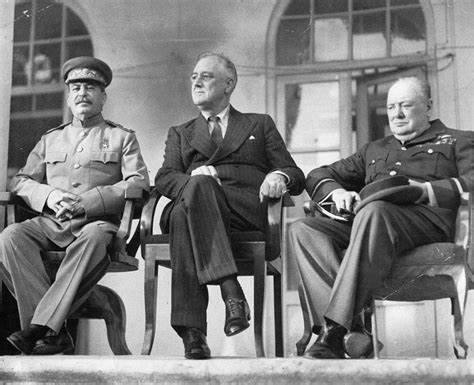
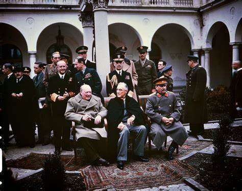
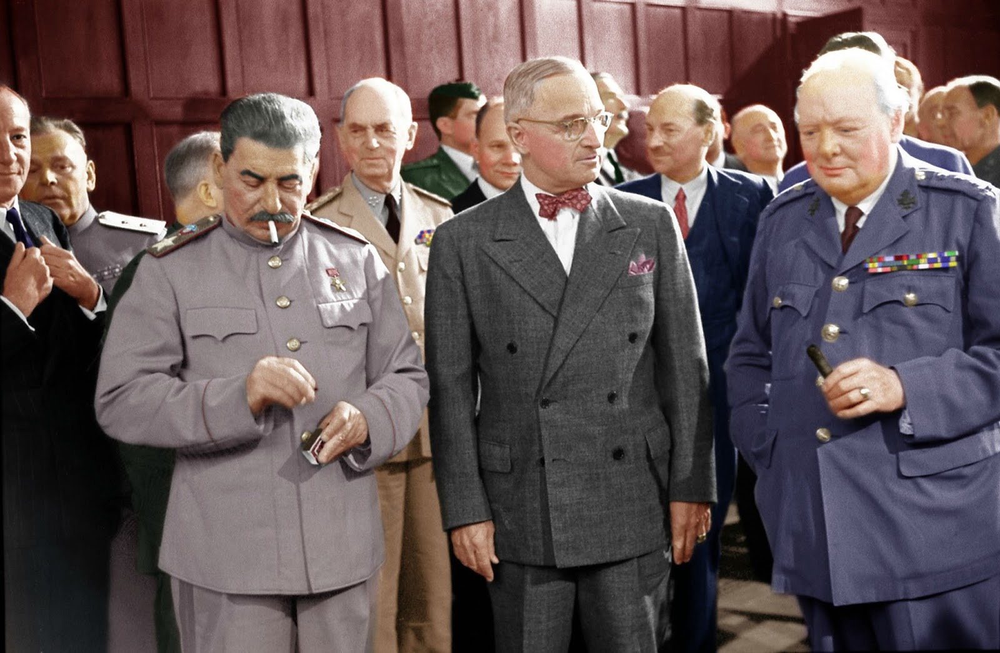
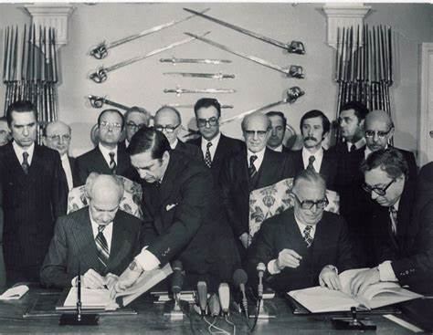
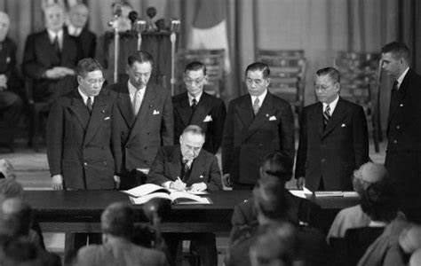

Tratados de Paz da Segunda Guerra Mundial
Os tratados de paz da Segunda Guerra Mundial foram acordos pós-guerra assinados entre os países vencedores (os Aliados) e os países vencidos (as potências do Eixo). Esses tratados definiram novas fronteiras, reparações de guerra e outras condições para a paz. Aqui estão alguns dos principais tratados:
1. Conferência de Teerã
Realizada em novembro de 1943, a Conferência de Teerã reuniu os líderes dos Aliados para traçar planos para a derrota da Alemanha e organizar as primeiras divisões territoriais das tropas de ocupação.
2. Conferência de Yalta
Em fevereiro de 1945, a Conferência de Yalta reafirmou o princípio de autodeterminação dos povos e favoreceu a expansão de regimes democráticos. Também confirmou as zonas de influência discutidas em Teerã.
3. Conferência de Potsdam
Realizada em julho e agosto de 1945, a Conferência de Potsdam dividiu a Alemanha em quatro zonas de ocupação e estipulou uma indenização de vinte bilhões de dólares a ser paga pelo governo alemão.
4. Tratado de Paris
Assinado em 1947, o Tratado de Paris definiu as fronteiras e as reparações de guerra para a Hungria, Bulgária, Finlândia, Itália e Romênia. Este tratado foi crucial para a reorganização da Europa pós-guerra.
5. Tratado de São Francisco
Assinado em 1951, o Tratado de São Francisco formalizou a paz entre os Estados Unidos e o Japão, reduzindo o território japonês e estabelecendo novas condições para a paz no Pacífico.
